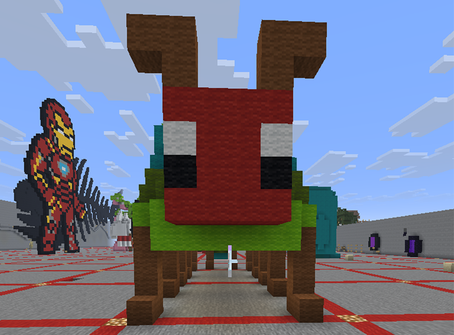
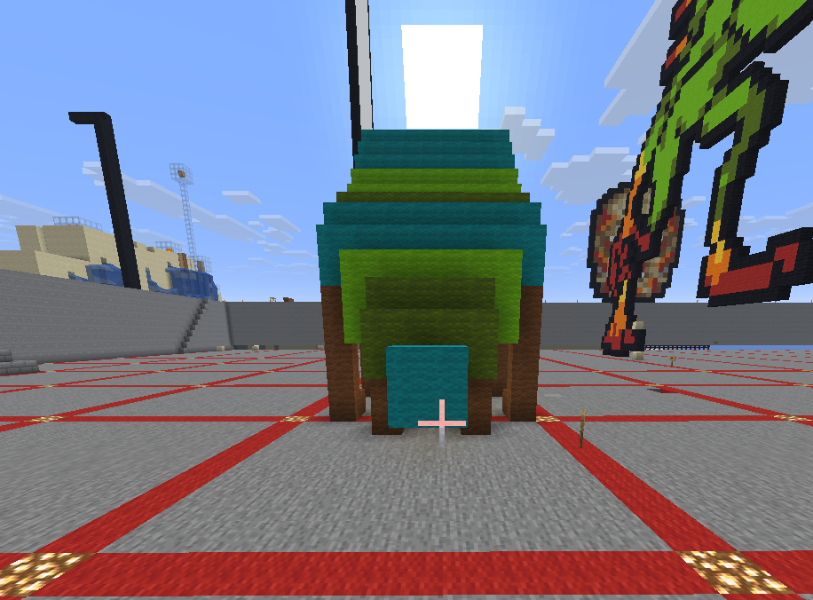

I chose to create The Very Hungry Caterpillar, loosely inspired by Eric Carle. I've been really interested in his work recently, this being one of his well-known pieces. It was my favorite children's book growing up, and holds a personal significance to not only myself, but to my family. We all love it! It was difficult to get the proportions right, especially in a survival world, but I'm really happy with how it came out.
I've played Minecraft since about 2013, but hadn't played in a while until this project. It reignited my love for the game, and I've spent many a late night building in my forever world.